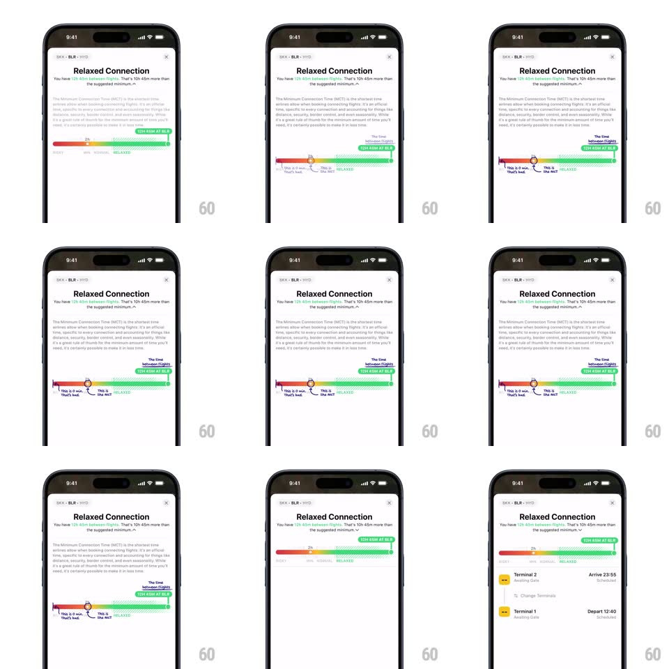

Media
Frame-by-frame

Rebuild this interaction 1:1: Flighty's connection assistant sheet - expanding the "Relaxed Connection" bottom sheet collapses the flight-leg summary (Terminal 2 arrive / Terminal 1 depart rows) into the detailed assistant view: the MCT explainer paragraph slides in and a gradient connection-timeline bar (with "This is if min. That's bad." and "This is the MCT" annotations plus a scrubber handle) fades and rises into place.

Rebuild this interaction 1:1: Flighty's connection assistant sheet - expanding the "Relaxed Connection" bottom sheet collapses the flight-leg summary (Terminal 2 arrive / Terminal 1 depart rows) into the detailed assistant view: the MCT explainer paragraph slides in and a gradient connection-timeline bar (with "This is if min. That's bad." and "This is the MCT" annotations plus a scrubber handle) fades and rises into place.
## Integration
Integration: stack-agnostic spec - springs given as stiffness/damping, timed motions as duration + curve; map every value to your framework and animation library of choice.
## Scene
White bottom sheet ("BLR - HYD" route header, X close): "Relaxed Connection" title, subline about minimum connection time, a horizontal gradient timeline bar (red -> orange -> green zones, RELAXED label, "3h 45m AT BLR" tag), and either the terminal-leg summary (collapsed) or the MCT explainer with annotated timeline (expanded).
## Motion spec
Pattern: sheet content swap with slide, fade, and height change.
- Tap to expand: the sheet grows taller (spring ~340/26, 350ms) while the terminal-leg rows slide down and fade out (200ms).
- The explainer paragraph fades in line-settled from the top (opacity + translateY -8px, 250ms, starting 100ms in).
- The annotated timeline slides up into place (translateY 16px + fade, spring ~360/24, 300ms): the scrubber handle pops onto the bar (scale 0.6 -> 1, spring ~420/24, 200ms) and the annotation labels ("This is if min...", "This is the MCT") fade in with 60ms stagger.
- Collapsing reverses the sequence: annotations fade, timeline slides down, leg rows return.
## Calibration
- The sheet is top-anchored at its grabber - growth pushes content down, the header never moves.
- The timeline bar is the shared element across both states - it stays visible and transforms (plain bar -> annotated bar) rather than crossfading.
## Reduced motion
Content crossfades (250ms); height changes without spring.
## Don't miss
- The timeline's gradient zones (red/orange/green) stay identical between states - only the annotations are added.
- The scrubber handle marks the user's actual connection time - it lands on the same value in both states.